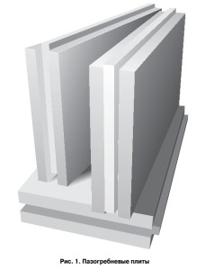
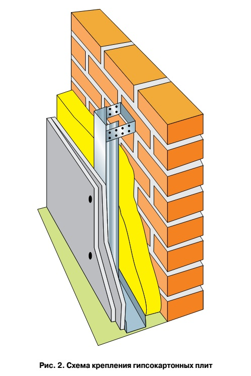
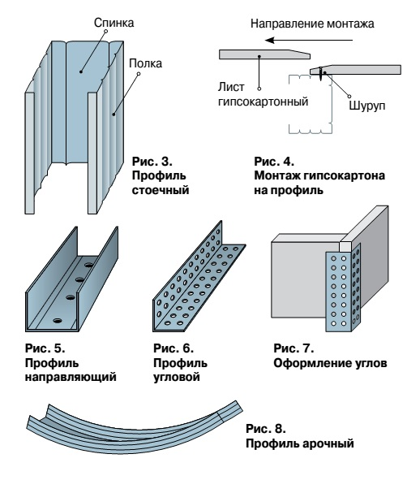
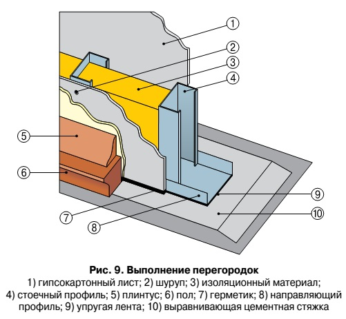

Отделка стен гипсокартоном (часть 1)
Среди тех, кто в процессе возведения дома уже добрался до отделочных работ, постоянно идут споры о способах отделки стен. Одни горой стоят за оштукатуривание, другие и слышать не хотят об этом довольно грязном способе, предпочитая выложить стены и потолок гипсокартонными плитами. Этот спор бесконечен и ввязываться в него нет смысла. Мы решили подойти к проблеме бесстрастно.
Так как в одном из предыдущих номеров мы подробно остановились на способе нанесения штукатурки, сейчас более скрупулезно расскажем о монтаже гипсокартонных плит.
Рассмотрим устройство стен и перегородок из гипсокартона, технологию их возведения и сопутствующие материалы. Рассматриваемые стены и перегородки представляют собой каркас из металлических профилей, обшитый листами гипсокартона (ГКЛ), с уложенными между ними плитами тепло- и звукоизоляции.
Гипсокартонные листы
Гипсокартонные листы (ГКЛ), которые также можно назвать сухой штукатуркой или гипсовыми панелями, – это строительно-отделочный материал для выполнения внутренних перегородок, подвесных потолков, облицовки стен и пр. Особые свойства гипсокартонных листов, позволяющие изгибать их, придавая различную конфигурацию, дают возможность создавать криволинейные поверхности.
Гипсокартонный лист состоит из гипсового сердечника, облицованного с двух сторон картоном. Для изготовления сердечника применяется гипс, обладающий необходимыми для использования в строительстве качествами. Выполненный на его основе лист обладает свойством поглощать из окружающей среды излишнюю влагу, а при изменении условий – наоборот, выделять ее. Можно сказать, что гипсокартонный лист обладает способностью «дышать».
Для повышения плотности и прочности гипсового сердечника в него добавляют специальные компоненты, а поверхности покрывают облицовочным картоном. Сцепление картона с гипсовым массивом сердцевины осуществляется с помощью клеящих добавок. Картон служит армирующим каркасом гипсокартонного листа, являясь при этом основой для последующих отделочных работ. Кроме того, он обладает всеми необходимыми для использования в жилых помещениях гигиеническими и экологическими качествами.
В гипсокартонных листах различают два вида кромки, причем в обоих случаях утоньшение начинается на расстоянии 50 мм от продольного торца с лицевой стороны. Но если в одном случае продольная кромка имеет прямолинейную форму – «УК», то в другом она несколько закруглена с лицевой стороны – «ПУК». Закругленная кромка позволяет заделывать стыки между листами без применения специальной армирующей ленты, только при помощи шпаклевки. Тип листа с прямыми кромками – «ПК» – применяется в основном для выполнения внутренних слоев или для заполнения полостей перегородок. Для устройства швов в местах стыков ГКЛ с прямыми кромками с их торца необходимо снять фаску под углом 45 градусов толщиной в одну треть листа.
Пазогребневые плиты

Пазогребневые плиты изготавливаются в форме прямоугольного параллелепипеда. Стыковочная и опорная поверхности имеют на соответствующих сторонах паз или гребень. Современные технологии позволяют получать плиты с отличным качеством лицевых поверхностей. Гипсокартон выпускается в нескольких модификациях, которые соответствуют различным условиям эксплуатации. Для помещений с повышенной влажностью используются влагостойкие гипсокартонные листы. Слои картона в них подвергаются специальной обработке антисептиками (для предотвращения образования плесени и грибков) и гидроизоляционными составами. В помещениях, где существует опасность возгорания, необходимо применять огнестойкийгипсокартон. Для его изготовления используются особые добавки, повышающие огнестойкость материала. Помимо этого выпускаются гипсокартонные листы повышенной огнестойкости и различные виды комбинированных панелей.
Металлический каркас
Конструктивной основой межкомнатных перегородок является жесткий металлический каркас. Он монтируется из стальных профилей нескольких типов, которые имеют различные функциональные нагрузки. Профили изготавливаются из сталь-ной ленты толщиной 0,55–0,8 мм способом холодной прокатки.
Для защиты от возможного воздействия агрессивных сред металлические профили оцинковывают. В нормальной воздушной среде на оцинкованной поверхности профиля образуется слой углекислого цинка, который предотвращает дальнейшее окисление материала. Действенное защитное покрытие получается в результате прочного сцепления стали и внешнего слоя цинка. При укорачивании профилей места разрезов не требуют дополнительной антикоррозийной обработки.
В процессе эксплуатации конструкции из металлических профилей должны выдерживать нагрузки от собственного веса, облицовочных гипсокартонных панелей, дополнительной отделки и возможных навесных элементов. Для этого на плоскостях профилей выполнены ребра жесткости – продольные гофры.
Стоечные профили
Существует несколько видов профилей, которые имеют различные функции. Прежде всего, это стоечные профили. Эти профили имеют сечение в виде швеллера. Они используются в качестве вертикальных стоек каркаса для закрепления на них гипсокартонных листов.
Полки профиля по всей длине имеют продольные канавки. Всего таких канавок три, при этом средняя указывает место стыка гипсокартонных листов, а две боковые центруют вворачиваемые шурупы. В спинках профилей предусмотрены специальные отверстия, необходимые для прокладки инженерных коммуникаций внутри стены или перегородки. Эти отверстия (как правило, спаренные) расположены около торцов профилей и имеют диаметр 33 мм.
Стоечные профили устанавливаются в направляющие профили. Для их скрепления используются шурупы или применяется метод просечки с отгибом. Монтаж гипсокартонных листов на стоечные профили осуществляется по направлению открытой части профиля. Шурупы сначала вворачиваются в полку профиля вблизи спинки и лишь потом – у противоположного края. При обратном порядке полка профиля может загнуться внутрь. Для правильного выбора размера профиля необходимо учитывать планируемую высоту перегородки, ее конструктивные особенности (однослойная или двухслойная облицовка), а также звуко- и теплоизоляционные требования.
Направляющие профили
Еще одним элементом металлического каркаса являются направляющие профили. Они также имеют сечение в виде швеллера и используются в роли направляющей основы для стоечных профилей. Кроме того, эти профили могут применяться для выполнения перемычек между стоечными профилями. Это необходимо, например, для установки в перегородках дверных коробок.
Спинки направляющих профилей имеют отверстия диаметром 8 мм для установки дюбелей, которыми профили крепятся к несущему основанию. При необходимости дополнительные отверстия высверливаются по месту. Ширина полки профиля составляет 40 мм, что дает возможность крепления гипсокартонных листов непосредственно к ней.
Угловые профили
Наиболее уязвимые места перегородок – наружные угловые стыки. Для устройства таких стыков используются гипсовые панели с прямыми кромками. Однако в таком случае повышается вероятность механического повреждения углов перегородок в процессе эксплуатации. Во избежание этого используются угловые профили.
Угол между полками составляет 85 градусов, что обеспечивает его плотное примыкание к прямому углу перегородки. Полки элемента перфорированы отверстиями диаметром 5 мм. В процессе монтажа эти отверстия заполняются шпаклевкой, которая наносится на поверхность профилей. Этим достигается необходимое сцепление между металлическим профилем и листом гипсокартона.
При выполнении криволинейных поверхностей из гипсовых панелей применяются арочные профили. Они изготавливаются из потолочных профилей. Радиус изгиба варьируется (но не менее 500 мм).

Изоляционный материал
В качестве тепло- и звукоизоляционного материала в комплектных системах предусматривается пенополистирол (хотя допустимо применение минераловатных и тому подобных плит). Этот материал изготавливается из суспензионного вспенивающегося полистирола и представляет собой жесткий вспененный термопласт, состоящий из сплавленных гранул. Структуру гранул образуют микроскопические поры, заполненные воздухом. Пенополистирол практически на 98% состоит из воздуха и лишь 2% приходится на сам пластик. Именно это обуславливает высокие тепло- и звукоизоляционные свойства материала.
Помимо низкой теплопроводности, пенополистирол имеет устойчивую структуру в большом диапазоне температур. Он хорошо противостоит воздействию различных химических веществ, как щелочных, так и слабокислых. Пенополистирол не создает питательной среды для грибков и плесени. К числу достоинств пенополистирола можно отнести долговечность и экологичность.
Недостатком пенополистирола является его сгораемость. Для уменьшения пожароопасности в описываемый материал добавляют антипирен. Пенополистиролустанав-ливается во внутреннем пространстве стены или перегородки. Как правило, применяются плиты толщиной 40 мм, при этом между ними и листами облицовки следует оставлять небольшой зазор. Плиты нарезаются ножом или пилой в соответствии с необходимыми размерами. Крепятся они стеновыми анкерами с шагом 400–450 мм по вертикали и 900 мм по горизонтали (в этих же целях допускается использование клея).

Сопутствующие материалы
Среди операций, выполняемых при устройстве стен и перегородок, необходимо вы-делить заделку швов в местах стыка листов гипсокартона. В технологии «сухого» строительства это, пожалуй, единственный «мокрый» процесс, который предполагает использование водных растворов.
Заделка швов между облицовочными плитами может осуществляться с использованием армирующей ленты или без нее.
В первом случае применяется шпаклевка для швов на гипсовой основе. На место стыка панелей с утоньшенными кромками на-носится слой шпаклевки, затем на него укладывается армирующая лента и далее наносится еще один шпаклевочный слой. Кроме того, этот материал ис-пользуется для ремонта всевозможных дефектов поверхности гипсокартонных листов.
Следует отметить, что материалы, используемые для выполнения облицовки из гипсокартонных плит, имеют в своем составе гипс. К подобным материалам относится и гипсовый монтажный клей. Он применяется для приклеивания гипсовых панелей и плит изоляции. Помимо этого, существует несколько десятков наименований других сопутствующих материалов (шпаклевки, клеи, заполнители швов и т.п.) для выполнения строительных работ.
Во второй части статьи мы расскажем о монтаже перегородок ГКЛ.